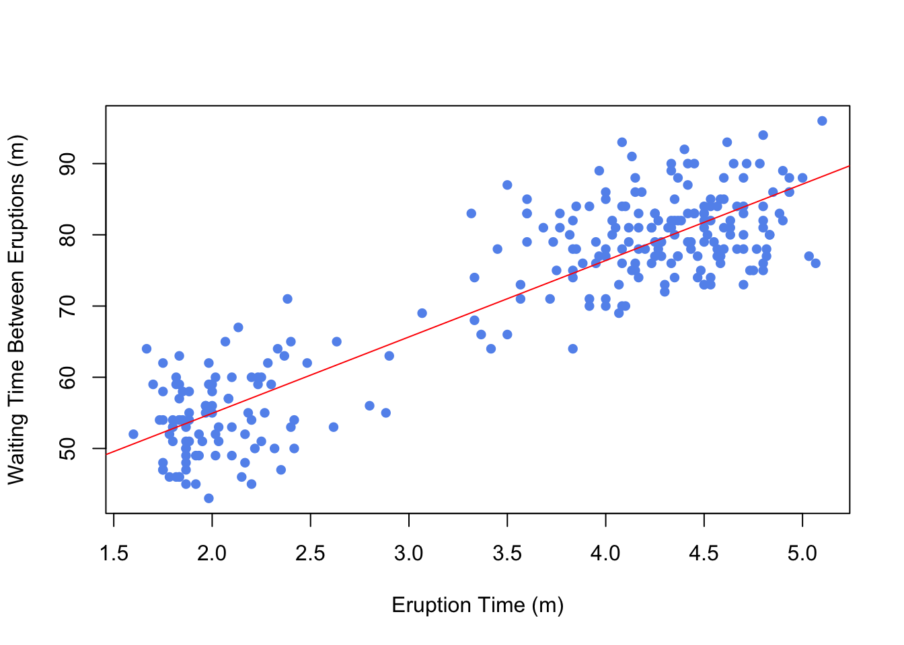
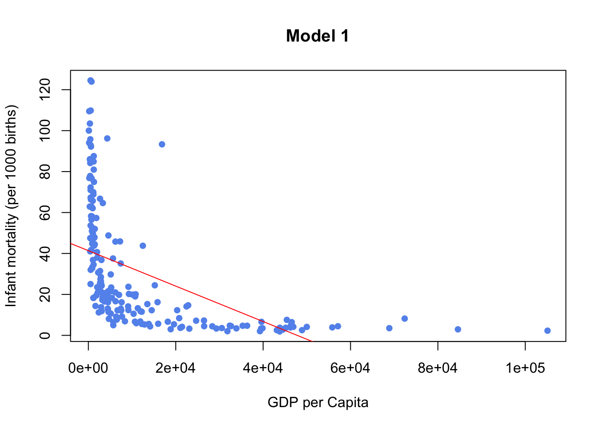
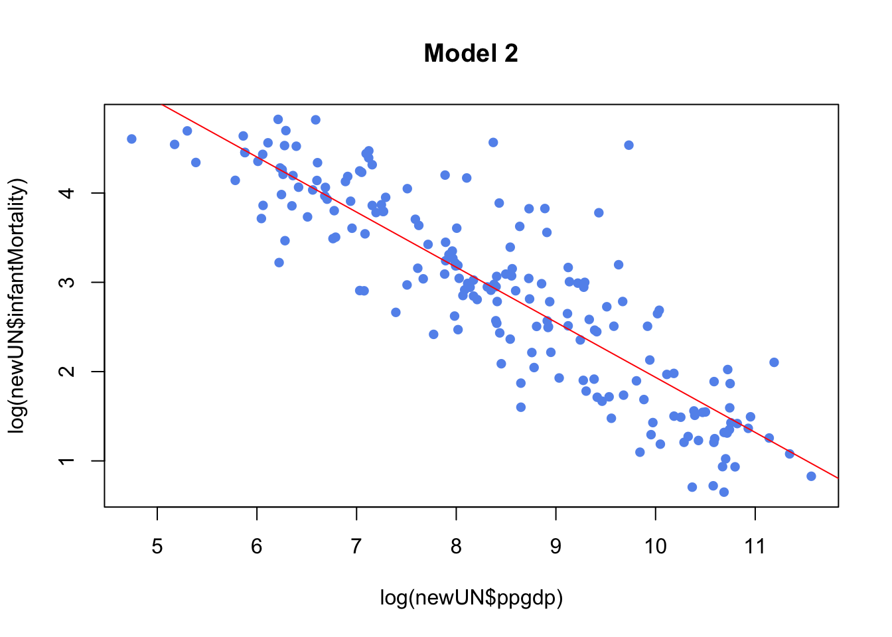
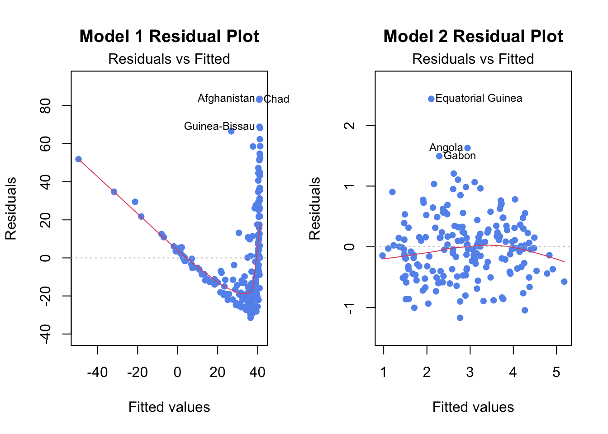
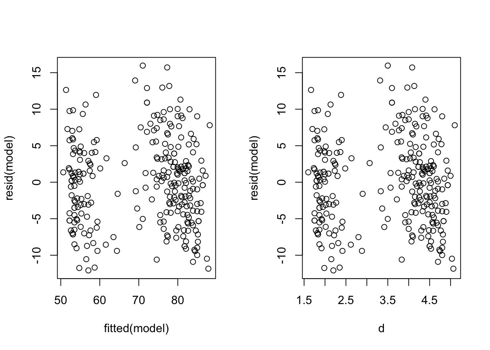
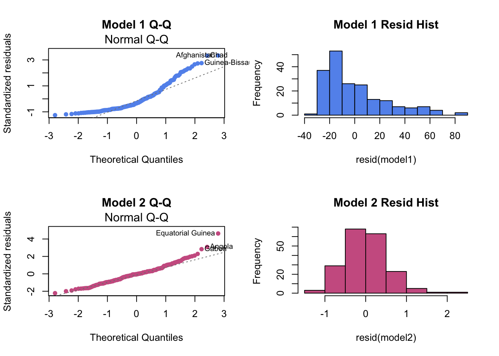
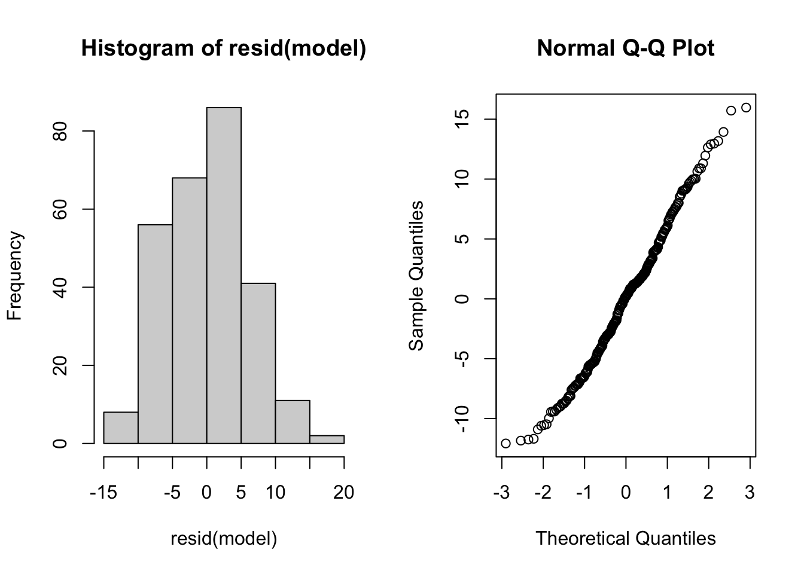

Chapter 3 Simple Linear Regression Models
3.1 Building an SLR Model
lm stands for Linear Model and is the function used for Linear Regression
model <- lm(Y ~ X, data)Practical 1 Example
data(faithful)
model <- lm(waiting ~ eruptions, faithful)
summary(model)##
## Call:
## lm(formula = waiting ~ eruptions, data = faithful)
##
## Residuals:
## Min 1Q Median 3Q Max
## -12.0796 -4.4831 0.2122 3.9246 15.9719
##
## Coefficients:
## Estimate Std. Error t value Pr(>|t|)
## (Intercept) 33.4744 1.1549 28.98 <2e-16 ***
## eruptions 10.7296 0.3148 34.09 <2e-16 ***
## ---
## Signif. codes: 0 '***' 0.001 '**' 0.01 '*' 0.05 '.' 0.1 ' ' 1
##
## Residual standard error: 5.914 on 270 degrees of freedom
## Multiple R-squared: 0.8115, Adjusted R-squared: 0.8108
## F-statistic: 1162 on 1 and 270 DF, p-value: < 2.2e-16Useful functions to extract data from model:
summ <- summary(model)
coef(model)gives coefficientsfitted(model)returns the vector of the fitted values, \(\hat{y}_i = b_0 + b_1 x_i\)resid(model)(orsumm$residuals) returns vector of residuals, \(e_i = y_i - \hat{y}_i\)summ$coefficientsgives more information on coefficient estimates (standard error, t-statistic, corresponding two-sided p-value)summ$sigmaextracts regression standard errorsumm$r.squaredreturns value of \(R^2\)
3.2 Plotting an SLR Model
Using Base R
plot(faithful$waiting ~ faithful$eruptions, xlab="Eruption Time (m)",
ylab="Waiting Time Between Eruptions (m)", pch=16, col="cornflowerblue")
abline(model, col="red")
3.3 Diagnostic Plots and Residual Analysis
Infant Mortality and GDP Example from MLLN Notes Section 3.3
model1 <- fit<- lm(infantMortality ~ ppgdp, data=newUN)
plot(newUN$infantMortality ~ newUN$ppgdp, xlab="GDP per Capita",
ylab="Infant mortality (per 1000 births)", pch=16, col="cornflowerblue",
main="Model 1")
abline(model1,col="red")
model2 <- lm(log(infantMortality) ~ log(ppgdp), data=newUN)
plot(log(newUN$infantMortality) ~ log(newUN$ppgdp), pch=16, col="cornflowerblue",
main="Model 2")
abline(model2,col="red")
model1clearly doesn’t fit SLR, we can confirm this be looking at diagnostic plotsmodel2which is a transformation fits better and is an example of good diagnostic plots
Residual Plot
plot(model1, which=1, pch=16, col="cornflowerblue", main="Model 1 Residual Plot")Comparison for Model 1 (poor fit) and Model 2 (good fit)
par(mfrow=c(1,2))
plot(model1, which=1, pch=16, col="cornflowerblue", main="Model 1 Residual Plot")
plot(model2,which=1,pch=16,col="cornflowerblue", main="Model 2 Residual Plot")
Example Using Simpler Methods (From Practical 1)
model is as from Practical 1
par(mfrow=c(1,2))
plot(y = resid(model), x=fitted(model)) #residuals against fitted values
plot(y = resid(model), x=d) #residuals against raw values
Residual Q-Q Plot and Histogram
Residual Q-Q Plot
plot(model1, which=2, pch=16, col="cornflowerblue", main="Model 1 Q-Q Plot")Residual Histogram
hist(resid(model1), col="cornflowerblue", main="Model 1 Residual Histogram")Comparison for Model 1 (poor fit) and Model 2 (good fit)
par(mfrow=c(2,2))
# Model 1 (before transformation)
plot(model1, which = 2,pch=16, col="cornflowerblue", main="Model 1 Q-Q")
hist(resid(model1),col="cornflowerblue", main="Model 1 Resid Hist")
# Model 2 (after transformation)
plot(model2, which = 2, pch=16, col="hotpink3", main="Model 2 Q-Q")
hist(resid(model2),col="hotpink3", main="Model 2 Resid Hist")
Example Using Simpler Methods (From Practical 1)
model is as from Practical 1
par(mfrow=c(1,2))
hist(resid(model))
qqnorm(resid(model))
3.4 Transforming Regression Variables
When a linear regression model doesn’t look like a good fit, it may be appropriate to transform one or both of the variables.
Example Making Log transformation (for Y and X)
transformed_model <- lm(log(Y) ~ log(X), data)Example Making Polynomial Transformation
transformed_model <- lm(Y ~ I(X^2), data) # I() is a general wrapperUsing ggplot
Change the formula parameter in geom_smooth
3.5 Confidence and Prediction Intervals
3.5.1 Confidence Intervals
Easiest to use confint(). confint(model, level=...) gives a confidence interval for each coefficient.
Example from Notes
carSales<-data.frame(Price=c(85,103,70,82,89,98,66,95,169,70,48),
Age=c(5,4,6,5,5,5,6,6,2,7,7))
reg <- lm(Price ~ Age, carSales)
confint(reg, level=0.95) #CI for parameters## 2.5 % 97.5 %
## (Intercept) 160.99243 229.94451
## Age -26.59419 -13.92833Practical 1 Example
Again, model is as from Practical 1
beta1hat <- coef(model)[2]
se.beta1 <- summary(model)$coefficients[2,2]
n <- length(w)
#The Confidence Interval is
beta1hat + c(-1,1) * qt(0.975, n-2) * se.beta1## [1] 10.10996 11.34932# or
confint(model, level=0.95)[2,]## 2.5 % 97.5 %
## 10.10996 11.34932CI at a new point
When newpoints is a data frame with same x column name and a new point you can calculate the model CI around that point using predict() with interval = "confidence".
predict(model, newdata = newpoints, interval = "confidence", level = 0.95)3.5.2 Prediction Intervals
Easiest to use predict(). To get a prediciton interval around a new point, use predict() with interval = "prediction".
predict(model, newdata = newpoints, interval = "prediction", level = 0.95)3.5.3 Plotting Confidence and Prediction Intervals
Base R
To plot a CI or PI line, use seq(a, b, by = ...) and predict() with newdata = data.frame(X = seq(a, b, by = ...)) and then plot the output using abline(). Using interval = "confidence" or interval = "prediction" depending on if you want a CI or a PI.
ggplot Confidence Interval
Let se = TRUE in geom_smooth.
ggplot Prediction Interval:
temp_var <- predict(model, interval="prediction")
new_df <- cbind(data1, temp_var)
ggplot(new_df, aes(x=X, y=Y))+
geom_point() +
geom_line(aes(y=lwr), color = "red", linetype = "dashed")+
geom_line(aes(y=upr), color = "red", linetype = "dashed")+
geom_smooth(method=lm, se=TRUE)